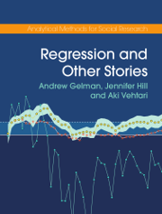
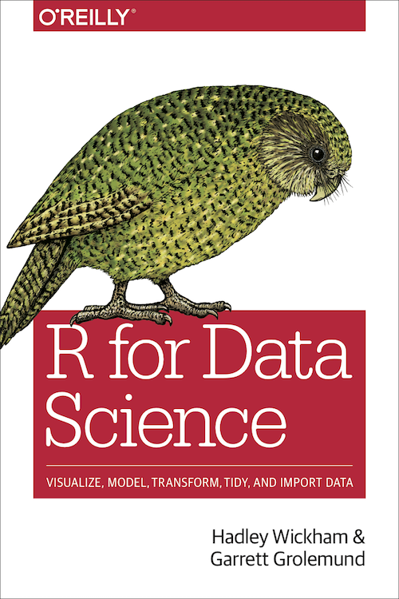

|  |
Gelman, Andrew, Jennifer Hill, and Aki Vehtari. 2020. Regression and other stories. Cambridge: Cambridge University Press. ROS |
Free to download PDF version from the book’s website: https://avehtari.github.io/ROS-Examples |

|
Alexander, Rohan. 2023. Telling Stories with Data. Chapman and Hall/CRC TSD |
Free online book: https://tellingstorieswithdata.com |

|
Gelman, A., and Hill, J. 2007. Data Analysis Using Regression and Multilevel/Hierarchical Models. Cambridge: Cambridge University Press. ARM |
Note: ROS is the expanded and updated version of Part 1 (and some of Part 3) of this book. While everyone in the free world eagerly awaits the publication of ROS’s multilevel counterpart, we’ll use ARM as a reference work for the theory underpinning multilevel modelling. Not freely available. Access it in print or online via the NU library |
Textbooks
The course does not strictly follow the content of a textbook, but the expectation is that students will read as much as possible of the assigned chapters from the following books:
Relatively large portions of text will be assigned for reading in each week from these books, referring to them by their acronyms. Don’t worry if you cannot read all the textbook content assigned in any given week! Those for whom the method covered by the assigned readings is new, will be able to refer back to them throughout the semester and beyond, reading thoroughly and completing the applied exercises. Those already familiar to some extent with the methods, should nonetheless read the text as a narrative and will discover hidden gems that will spectacularly improve their understanding and ability to interpret their statistical results.
Application
In the IT labs we will practice applying methods by reproducing small bits of published research, using the data and (critically) the modelling approaches used by the authors. To fully understand the context of these data and the methods used, you must read the original journal articles and the available supplementary materials provided alongside. These readings will be listed under each week’s outline (still work in progress!).
The articles come from a variety of different fields, so expect them to push you outside your disciplinary comfort zone. The point is to see how methods have been used in practice and learn how to reproduce (and potentially improve) those analyses. This will then enable you to apply this knowledge to your own research questions.
When selecting the articles, the aim was to strike a fine balance between (a) the simplicity of the methods employed, (b) data and analytical transparency, and (c) the strength of the analysis. So don’t take them as examples of all-rounds best practice, but examples of research that gets published while being self-confident enough to open itself up for public scrutiny. Aim for this in your own research!
Technique
There will also be various readings relating more closely to the technicalities of coding in R and scientific writing, collaboration and communication in general. These readings will also be listed under each week’s outline as the semester progresses. The generic reading that students are advised to go through on their own is:
|  |
Wickham, Çetinkaya-Rundel and Grolemund. 2022. R for Data Science (2nd ed.) R4DS |
Free online book: https://r4ds.hadley.nz/ |
Intuition
Finally, there will also be recommended readings listed under certain weeks that help place methods, statistics and probability theory in a broader frame. These are useful readings for everyone, regardless of whether you will be applying quantitative analysis in your research or future work.
Required software
We will use a number of open-source software for data analysis and scientific writing. You need to install these on your personal computers to be able to work away from campus:
| R (programming language) |
Essential |
R needs to be installed even if we will only use it via the RStudio interface. | Install the latest version from here | |
| RStudio (integrated development environment) |
Essential |
You will need the free desktop version appropriate for your operating system. RStudio combines the R Console - the direct interface to R - with a number of other panels. | Install the latest version from here | |
| Tidyverse (collection of R packages) |
Essential |
The tidyverse is a collection of packages that make the R language easier to use by introducing a more consistent grammar. It provides functions that are particularly useful for data manipulation and visualisation. It is the most common ‘dialect’ used among social scientists. | Install from within RStudio by executing in the Console: |
|
 |
Quarto (scientific publishing system) |
Essential |
We will be using Quarto markdown documents (.qmd) throughout the course to document our data analysis. .qmd files extend the plain-text Markdown mark-up language (.md) to allow for data analysis code to be executed and results presented alongside the main text. This is an essential requirement for analytical transparency, reliability and reproducibility.The assignment will also be completed in .qmd. |
Included by default in the latest RStudio release; no need to install separately. |
| Zotero (reference manager) |
Recommended |
If you are not yet using a reference manager, I recommend giving Zotero a try. It will make your work much more efficient and it integrates (relatively well) with RMarkdown and Quarto using the the Better BibTeX add-on. | Install the latest version and add-ons from here |
Students with no previous experience using R and/or RStudio are advised to complete the self-paced free online training course R for Social Scientists provided by Data Carpentry at https://datacarpentry.org/r-socialsci/
There are several ways to get help with R outside class. If you encounter an error message or are looking for a function to perform a specific task that we have not covered in class, you can do a Google search; for best results, use the https://rseek.org/ search engine, which limits the results to those relating to the R language.
You can also search for answers on Stack Overflow, which is a popular help and discussion website for programmers. You can also post a question there, but make sure to follow community standards and advice on how to ask a good question and how to provide a minimal reproducible example. You will need some experience using the site before being able to ask a good question, but it’s more than certain that any quesiton you have at this stage will have an answer already somewhere.
Any further study resources will be listed here.